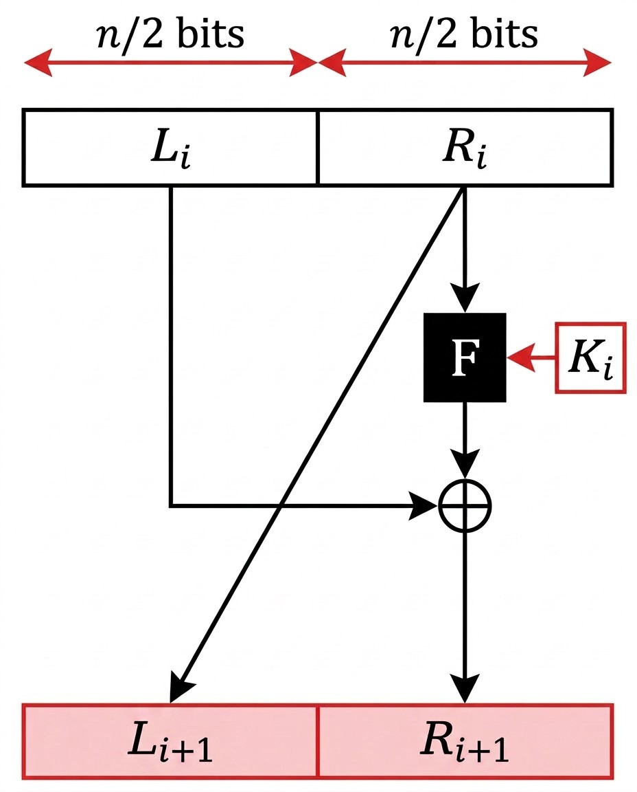
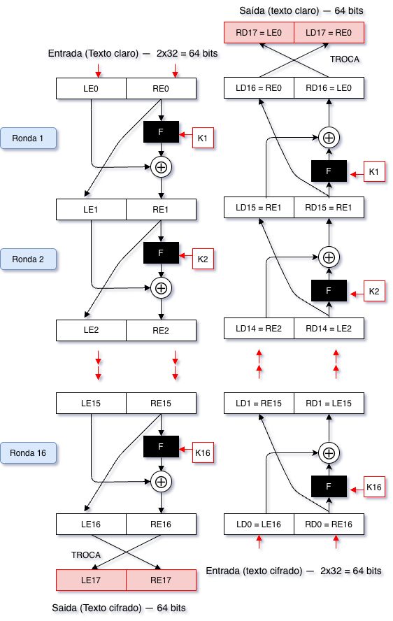
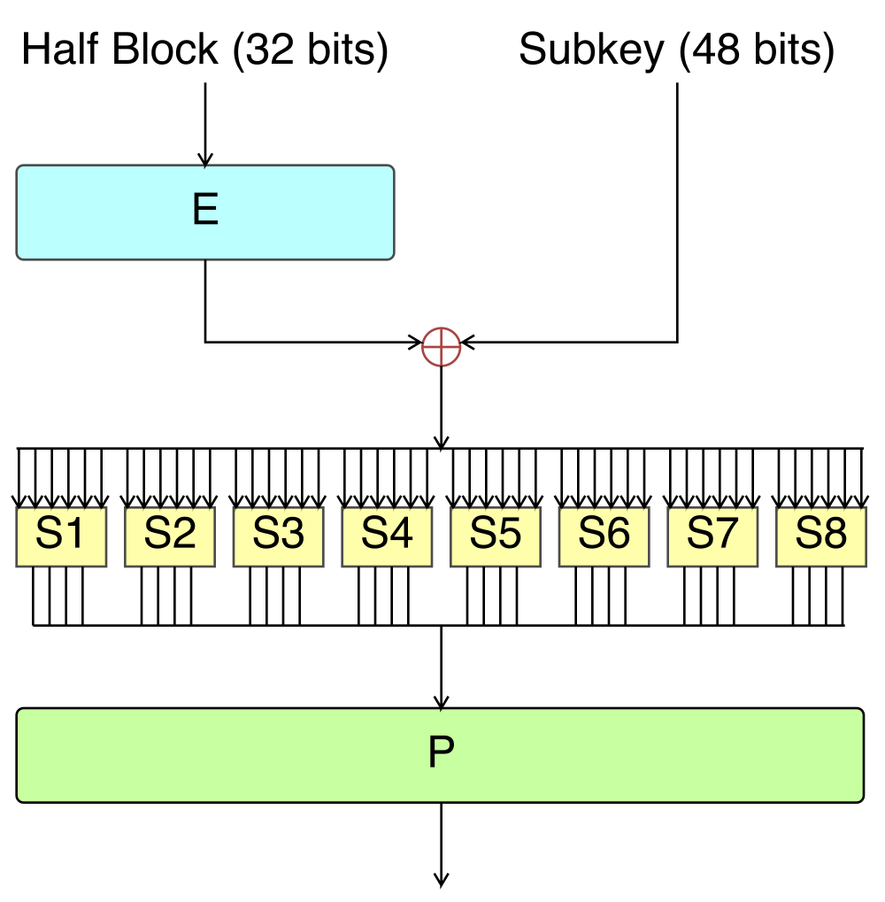

2 Cifras de Bloco — Fundamentos, Feistel, DES e 3DES
Introdução
As cifras clássicas estudadas no capítulo anterior operam sobre letras de um alfabeto natural: substituem-nas, transpõem-nas, mas trabalham sempre com a estrutura de uma língua. Um computador não lê letras; lê sequências de bits. As cifras modernas partem deste facto: o texto claro, seja ele texto, imagem ou som, é sempre, em última análise, uma sequência binária, e é sobre essa sequência que as cifras de bloco operam.
Este capítulo introduz a estrutura comum à generalidade das cifras de bloco modernas, a rede de Feistel, e dois algoritmos históricos construídos sobre ela: o DES, durante décadas o padrão dominante, e o 3DES, a extensão criada para prolongar a sua vida útil depois de o DES ter sido considerado inseguro. O capítulo seguinte trata do AES, o algoritmo que hoje ocupa o lugar que o DES ocupou.
2.1 Fundamentos das Cifras de Bloco
2.1.1 O que é uma cifra de bloco
Uma cifra de bloco divide o texto claro em blocos de tamanho fixo, tipicamente 64 ou 128 bits, e cifra cada bloco independentemente, usando sempre a mesma chave. Formalmente, para um bloco de \(n\) bits e uma chave \(K\), o algoritmo de cifragem \(E_K\) é uma função bijectiva:
\[E_K : \{0,1\}^n \rightarrow \{0,1\}^n\]
Ou seja, para cada chave \(K\), \(E_K\) é uma permutação distinta do conjunto de todos os blocos possíveis: cada bloco de texto claro tem exactamente um bloco de texto cifrado correspondente, e vice-versa, o que garante que a decifragem é sempre possível e única.
Isto generaliza directamente a cifra monoalfabética do capítulo anterior, que também era uma permutação, mas do alfabeto de 26 letras. Uma cifra de bloco com blocos de 64 bits é uma permutação de um conjunto com \(2^{64}\) elementos, um espaço imensamente maior, o que por si só já dificulta a análise de frequência: em vez de 26 símbolos possíveis, há \(2^{64}\) blocos possíveis, cada um ocorrendo raramente o suficiente para que contar frequências deixe de ser útil.
2.1.2 A cifra ideal, e porque é impraticável
Se uma cifra de bloco é, no fundo, uma permutação parametrizada pela chave, a construção mais directamente segura seria escolher, para cada chave, uma permutação completamente arbitrária entre todos os blocos de entrada e todos os blocos de saída, sem qualquer estrutura interna que um criptanalista pudesse explorar. A esta construção chama-se a cifra ideal, e o problema com ela não é de segurança, é de tamanho da chave.
Formalmente, o algoritmo de cifragem \(E_K\) de uma cifra de bloco de \(n\) bits é uma função
\[E_K : \{0,1\}^n \rightarrow \{0,1\}^n\]
que mapeia cada um dos \(2^n\) blocos de entrada possíveis a um bloco de saída, também de \(n\) bits. Considere-se o caso \(n=4\): cada bloco de entrada é um valor entre 0000 e 1111, mais convenientemente escrito em hexadecimal, já que um único algarismo hexadecimal representa exactamente 4 bits. Os 16 blocos possíveis correspondem, um a um, aos algarismos 0 a F.
Uma permutação arbitrária destes 16 valores é qualquer reatribuição bijectiva de cada entrada a uma saída distinta, sem repetições. Por exemplo, estas três permutações são todas válidas, e completamente diferentes entre si:
Entrada: 0 1 2 3 4 5 6 7 8 9 A B C D E F
Permutação A (+5): 5 6 7 8 9 A B C D E F 0 1 2 3 4
Permutação B (livre): 5 D 2 9 0 B 7 E 3 F 1 8 6 4 A C
Permutação C (pares): 0 1 3 2 5 4 7 6 9 8 B A D C F EA Permutação A é apenas um deslocamento — a mesma lógica da cifra de César, agora sobre hexadecimais em vez de letras. As permutações B e C não seguem nenhuma fórmula simples: foram escolhidas valor a valor, sem qualquer padrão, apenas garantindo que cada entrada tem uma saída diferente e que nenhuma saída se repete.
Quantas permutações destas existem, ao todo? Para a primeira entrada (0), há 16 saídas possíveis; escolhida essa, sobram 15 opções para a entrada seguinte (1), já que a saída escolhida para 0 não pode repetir-se; depois 14 para a entrada 2; e assim sucessivamente, até restar apenas 1 opção para a última entrada (F). O total é:
\[16 \times 15 \times 14 \times \cdots \times 1 = 16! \approx 2{,}09 \times 10^{13}\]
Este número não depende em nada do tamanho da chave: é apenas a contagem de todas as formas de baralhar 16 valores, quer esses valores sejam algarismos hexadecimais, cartas de um baralho, ou letras de um alfabeto.
É aqui que entra o problema da chave. Se a chave \(K\) tivesse também 4 bits, existiriam apenas 16 valores de chave possíveis — e cada chave, através do algoritmo, só consegue determinar uma permutação. Por muito engenhoso que seja o algoritmo, 16 chaves nunca conseguem seleccionar mais do que 16 permutações diferentes, de um total de \(16! \approx 2{,}09\times10^{13}\): por exemplo, a chave 5 podia seleccionar a Permutação A, a chave 3 a B, e assim por diante, mas ficam sempre só 16 possibilidades cobertas. A cifra de César é exactamente este caso: as suas 16 chaves seleccionam sempre 16 deslocamentos (como a Permutação A), nunca uma permutação livre como a B ou a C. Para a chave conseguir alcançar qualquer uma das \(16!\) permutações, e não apenas um pequeno subconjunto escolhido à partida, precisa de ter, ela própria, muitos mais de 4 bits.
Quão maior, exactamente? Há duas respostas para esta pergunta: a primeira dá o tamanho REAL da chave para endereçar todas as permutações possíveis de blocos de 4 bits para blocos de 4 bits; a segunda é uma estimativa que maximiza esse valor.
Sabendo que há \(16!\) permutações válidas o número de bits, \(x\) necessário para mapear esse número é o tamanho da chave. Então \(2^x = (16!)\) o que nos dá \(x = \log_2(16!) \approx 45\) bits.
A segunda maneira dá uma forma mais directa de responder ao tamanho da chave, que é imaginar que esta é, literalmente, a tabela de substituição completa. Por exemplo, para a Permutação A (a de “+5”) têm-se a seguinte tabela:
Entrada Saída (4 bits) Saída (Hex.)
0 → 0 1 0 1 (= 5)
1 → 0 1 1 0 (= 6)
2 → 0 1 1 1 (= 7)
3 → 1 0 0 0 (= 8)
4 → 1 0 0 1 (= 9)
5 → 1 0 1 0 (= A)
6 → 1 0 1 1 (= B)
7 → 1 1 0 0 (= C)
8 → 1 1 0 1 (= D)
9 → 1 1 1 0 (= E)
A → 1 1 1 1 (= F)
B → 0 0 0 0 (= 0)
C → 0 0 0 1 (= 1)
D → 0 0 1 0 (= 2)
E → 0 0 1 1 (= 3)
F → 0 1 0 0 (= 4)Da tabela vemos que o tamanho da chave tem que ser tal que possa endereçar uma string numérica de 16 caracteres hexadecimais. Portanto tem que ter o tamanho de \(16\) caracteres. Como cada caractere tem 4 bits, o tamanho da chave em bits é \(4 \times 16 = 64\) o que corresponde à área da tabela mostrada:
\[\text{altura} \times \text{largura} = 16 \times 4 = 64 \text{ bits}\]
Generalizando, para um bloco de \(n\) bits, a chave da cifra ideal precisa de
\[n \times 2^n \text{ bits}\]
Para \(n=4\), isto são apenas 64 bits, perfeitamente gerível. Mas para um bloco de \(n=64\) bits, um tamanho perfeitamente razoável para uma cifra real:
\[64 \times 2^{64} = 2^6 \times 2^{64} = 2^{70} \approx 10^{21} \text{ bits}\]
Um número sem qualquer aplicação prática: nenhum sistema consegue gerar, armazenar, distribuir ou sequer escrever uma chave desta dimensão. A cifra ideal é, por isso, impraticável. As cifras de bloco reais não tentam realizá-la directamente; em vez disso, procuram aproximar-se do seu comportamento imprevisível, combinando repetidamente, ao longo de várias rondas, operações simples e eficientes de especificar, até que o resultado final seja computacionalmente indistinguível de uma permutação verdadeiramente arbitrária. É exactamente para isto que servem a confusão e a difusão, apresentadas de seguida.
2.1.3 Confusão e difusão
Claude Shannon, o mesmo autor que demonstrou o segredo perfeito do One-Time Pad, identificou em 1949 duas propriedades que uma cifra robusta deve garantir:
- Confusão: a relação entre a chave e o texto cifrado deve ser o mais complexa e não linear possível, de modo a esconder qualquer padrão estatístico que ligue os dois. Na prática, obtém-se através de operações de substituição não lineares.
- Difusão: a influência de cada bit do texto claro (e de cada bit da chave) deve espalhar-se por muitos bits do texto cifrado, de forma que alterar um único bit de entrada altere, em média, metade dos bits de saída, de forma aparentemente aleatória. Na prática, obtém-se através de operações de permutação e mistura de bits.
Nenhuma das duas propriedades, isoladamente, é suficiente: a substituição sozinha, como se viu na cifra monoalfabética, é vulnerável à frequência; a transposição sozinha mantém a frequência inteiramente intacta. As cifras de bloco modernas combinam as duas, aplicando repetidamente, ao longo de várias rondas, uma sequência de substituições e permutações, até que o texto cifrado final não deixe transparecer nenhuma relação estatística útil com o texto claro ou com a chave.
2.2 A Rede de Feistel
A generalidade das cifras de bloco clássicas, incluindo o DES, organiza estas rondas segundo uma estrutura proposta por Horst Feistel, nos anos 1970, enquanto trabalhava na IBM. Numa rede de Feistel, o bloco divide-se em duas metades iguais, \(L_i\) (esquerda) e \(R_i\) (direita), e cada ronda \(i\) aplica-se assim:

\[L_{i+1} = R_i\] \[R_{i+1} = L_i \oplus F(R_i, K_i)\]
onde \(F\) é uma função de ronda, tipicamente não linear, parametrizada por uma subchave \(K_i\) derivada da chave principal, e \(\oplus\) representa a operação XOR bit a bit.
A propriedade fundamental de uma rede de Feistel é que a decifragem usa exactamente a mesma estrutura da cifragem, apenas com as subchaves aplicadas em ordem inversa, e isto é verdade independentemente da função \(F\) escolhida, mesmo que \(F\) não seja, em si, invertível. Isto simplifica consideravelmente a implementação: o mesmo circuito ou código serve para cifrar e para decifrar, o que não seria necessariamente possível caso \(F\) tivesse de ser tanto aplicada como invertida.

2.2.1 Exemplo com uma rede reduzida
Para tornar isto concreto, considere-se uma versão drasticamente reduzida, com blocos de apenas 8 bits (metades de 4 bits) e a função \(F(R, K) = \text{ROL}_1(R) \oplus K\), onde \(\text{ROL}_1\) roda os 4 bits de \(R\) um lugar para a esquerda. Esta função não tem qualquer pretensão de segurança real, serve apenas para ilustrar o mecanismo.
Com texto claro \(L_0 = 1010\), \(R_0 = 0110\), e duas subchaves \(K_1 = 0011\), \(K_2 = 1100\):
Ronda 1: \(F(R_0, K_1) = \text{ROL}_1(0110) \oplus 0011 = 1100 \oplus 0011 = 1111\) \(L_1 = R_0 = 0110 \qquad R_1 = L_0 \oplus F(R_0, K_1) = 1010 \oplus 1111 = 0101\)
Ronda 2: \(F(R_1, K_2) = \text{ROL}_1(0101) \oplus 1100 = 1010 \oplus 1100 = 0110\) \(L_2 = R_1 = 0101 \qquad R_2 = L_1 \oplus F(R_1, K_2) = 0110 \oplus 0110 = 0000\)
O texto cifrado é \(L_2 R_2 = 01010000\). Para decifrar, aplicam-se as mesmas duas rondas, mas com as subchaves por ordem inversa (\(K_2\) primeiro, depois \(K_1\)), recuperando exactamente \(L_0 = 1010\), \(R_0 = 0110\) — confirmado por computação directa. Repare-se que em nenhum momento foi necessário inverter a função \(F\): só a ordem das subchaves mudou.
2.3 DES — Data Encryption Standard
O DES (Data Encryption Standard) foi desenvolvido pela IBM, com contributos da NSA, e adoptado em 1977 como padrão federal dos Estados Unidos (Stallings 2020). Durante quase duas décadas, foi o algoritmo de cifra simétrica mais usado no mundo.
O DES é uma rede de Feistel com as seguintes características:
- Bloco de 64 bits.
- Chave de 56 bits efectivos (representada como 64 bits, dos quais 8 são bits de paridade, sem contribuição para a segurança).
- 16 rondas, cada uma com uma subchave de 48 bits derivada da chave principal por um esquema de rotações e permutações.
- Função de ronda \(F\) construída a partir de expansão de bits, XOR com a subchave, substituição não linear através de oito tabelas fixas (as S-boxes, a principal fonte de confusão do algoritmo) e uma permutação final.
- Uma permutação inicial (IP) antes da primeira ronda e a sua inversa, a permutação final (FP), depois da última, ambas fixas e sem qualquer contribuição para a segurança criptográfica: servem apenas para reorganizar os bits de entrada e saída, um resquício da implementação em hardware original do DES.
A estrutura geral do DES é, portanto, exactamente a rede de Feistel já descrita na secção anterior, com \(n=64\) e 16 rondas. O que é específico do DES, e não decorre da estrutura de Feistel em si, é a construção interna da função \(F\):

2.3.1 A força do DES
O espaço de chaves do DES tem \(2^{56} \approx 7,2 \times 10^{16}\) chaves possíveis. Este número pareceu astronomicamente seguro em 1977, mas a evolução do poder computacional tornou-o cada vez mais vulnerável a um ataque de força bruta simples, exactamente o mesmo princípio já discutido para a cifra de César, apenas com um espaço de chaves maior. Houve ainda, desde cedo, uma segunda fonte de desconfiança: as S-boxes do DES, a componente responsável pela sua confusão, foram especificadas pela NSA sem justificação pública do critério de desenho, o que alimentou décadas de suspeitas de que pudessem esconder uma fraqueza deliberada, nunca confirmada, mas também nunca inteiramente afastada (Du 2022).
A queda do DES por força bruta ficou documentada por uma série de desafios públicos da RSA Security. Em 1997, o projecto DESCHALL quebrou uma mensagem cifrada com DES em 96 dias, usando ciclos ociosos de computadores voluntários espalhados pela Internet. Em 1998, o projecto distributed.net repetiu o feito em apenas 39 dias, e a Electronic Frontier Foundation construiu uma máquina dedicada, a Deep Crack, capaz de o fazer em cerca de 56 horas, por um custo então inferior a 250 mil dólares. Em 1999, a combinação de distributed.net com a Deep Crack reduziu o tempo a 22 horas (Du 2022; Stallings 2020). O DES foi formalmente substituído pelo 3DES em 1999, e está hoje obsoleto: não deve ser usado para proteger informação nova, apenas encontrado em sistemas legados ainda por substituir.
2.4 3DES — Triple DES
Perante a fragilidade do DES, a solução mais imediata, adoptada em 1999 enquanto se preparava um sucessor definitivo (viria a ser o AES, apresentado no capítulo seguinte), foi aplicar o próprio DES três vezes seguidas, com chaves diferentes. O 3DES (ou Triple DES) cifra cada bloco segundo o esquema EDE (Encrypt-Decrypt-Encrypt):
\[C = E_{K_3}(D_{K_2}(E_{K_1}(P)))\]
onde \(E\) e \(D\) são as operações de cifragem e decifragem do DES original. A alternância cifra-decifra-cifra, em vez de três cifragens seguidas, existe sobretudo por compatibilidade: com \(K_1 = K_2 = K_3\), o 3DES reduz-se exactamente a uma única cifragem DES normal, permitindo que sistemas antigos continuem a interoperar com sistemas novos.
Consoante o número de chaves distintas usadas, o 3DES oferece:
- Três chaves distintas (\(K_1, K_2, K_3\)): segurança efectiva de aproximadamente 112 bits (não 168, devido a um tipo de ataque conhecido como meet-in-the-middle, que reduz o ganho teórico de aplicar três chaves de 56 bits).
- Duas chaves distintas (\(K_1 = K_3\)): segurança efectiva de aproximadamente 80 bits, hoje considerada insuficiente.
O 3DES resolveu o problema imediato do espaço de chaves, mas herdou as restantes limitações estruturais do DES (bloco pequeno de 64 bits, entre outras), e é cerca de três vezes mais lento do que uma única cifragem DES, uma vez que repete o algoritmo original três vezes por bloco. Por estas razões, o NIST recomenda, desde 2023, que o 3DES deixe de ser usado em aplicações novas, reservando-o apenas para manter a compatibilidade com sistemas legados (Stallings 2020). O capítulo seguinte introduz o algoritmo que o substituiu: o AES.
2.5 Síntese do Capítulo
Este capítulo introduziu a estrutura fundamental das cifras de bloco modernas:
- Uma cifra de bloco é uma permutação de blocos de bits de tamanho fixo, parametrizada pela chave, generalizando a ideia de permutação já vista na cifra monoalfabética, mas num espaço muito maior
- A cifra ideal, que realizaria essa permutação de forma completamente arbitrária, exigiria uma chave de \(n \times 2^n\) bits, impraticável para qualquer bloco realista; as cifras de bloco reais aproximam-se do seu comportamento por outra via
- Confusão (relação complexa chave-texto cifrado) e difusão (espalhamento da influência de cada bit), propostas por Shannon, são as duas propriedades que as cifras de bloco modernas combinam ao longo de várias rondas para conseguir essa aproximação
- A rede de Feistel organiza estas rondas de forma a que a decifragem use exactamente a mesma estrutura da cifragem, com as subchaves por ordem inversa, mesmo que a função de ronda \(F\) não seja, em si, invertível
- O DES, padrão dominante entre 1977 e 1999, tem bloco de 64 bits, chave efectiva de 56 bits e 16 rondas de Feistel; o seu espaço de chaves reduzido tornou-o vulnerável a força bruta (de 96 dias, em 1997, a 22 horas, em 1999), e está hoje obsoleto
- O 3DES, adoptado em 1999, aplica o DES três vezes (esquema EDE), estendendo a segurança efectiva até cerca de 112 bits, ao custo de ser cerca de três vezes mais lento; está também a caminho da descontinuação
2.6 Para Pensar
Na rede de Feistel, a função \(F\) não precisa de ser invertível para que todo o sistema seja reversível. Que vantagem prática traz isto a quem desenha o algoritmo, comparando com uma cifra em que a função central tivesse de ser, ela própria, invertível?